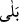
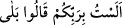
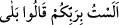
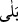
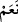
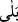
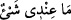
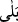

Âşığın gönlü bağ gibi, Hakk’ın feyzi de bahar bulutu gibidir
Hak onların gönül bağına dâimâ tâze hayat ihsan eder
“Evet! Elbette kadirdir.” Bu, Allah Teâlâ tarafından verilen cevap ve istifhâm-ı
inkârînin ifade ettiği şeyi tasrih etmek, olumsuzluktan sonrasını pekiştirmektir. Onlar bu
cevabı telaffuz etseler de kendilerini ilzam etmesi korkusuyla duraklasalar da cevabın
belli olduğunu bildirmektir.
Şeyhzâde der ki: “
”, önce geçen olumsuz hükmü olumlu yapmaya ve olumsuzluğu
ortadan kaldırmaya mahsus bir kelimedir. Burada ise sorudan sonraki olumsuzluğu
ortadan kaldırmak içindir. Yani, evet elbette O kadirdir, demektir. Nitekim Allah
Teâlâ’nın “
” (Ben sizin Rabbiniz değil miyim? (Onlar da:) Evet
dediler.” (el-A’râf, 7/172) kavli de böyledir. Yâni evet, sen bizim rabbimizsin,
demektir.”
el-Müfredât’ta der ki: “
” (Ben sizin Rabbiniz değil miyim? (Onlar
da:) Evet dediler.” (el-A’râf, 7/172) âyetinde olduğu gibi “
”, olumsuz sorunun
cevabıdır. “
(Cennet ehli cehennem ehline:) Siz de
Rabbinizin size vaad ettiğini gerçek buldunuz mu? diye seslenir. Onlar da: “Evet!”
derler.” (el-A’râf, 7/44) âyetinde olduğu gibi “
” yalnız (olumlu) soru cümlesinin
cevabıdır. Burada “ ” denilmez. “
(Benim yanımda bir şey yok.)”
denildiğinde sen de “ ” dersen o kişinin sözünü reddetmiş (Hayır, yok demiş) olursun.
“ ” dersen ikrar/kabul etmiş (Evet, yok demiş) olursun.”
“O, her şeyi hakkıyla bilen yaratıcıdır.” Yani, evet Allah buna kadirdir ve O yaratma
ve ilimde keyfiyet ve kemmiyet bakımından en üstün olandır. Bazıları şöyle demiştir: O
mahlûkâtı ve malûmatı çok olandır. Peşpeşe yaratır ve mahlûkâtın hepsini bilir.
Burhan Reşîdî der ki: “Allah Teâlâ’nın mübalağa siygası üzere olan bütün sıfatları
mecazdır. Çünkü bu siygalar mübalağa için konulmuştur. Halbuki Allah’ın sıfatlarında
mübâlağa
yoktur.
Çünkü
mübalağa
bir
şeye
olduğundan
fazlasını
ispat
etmek/yüklemektir. Allah Teâlâ’nın sıfatları ise kemâlde en son noktada olup onlar
hakkında mübâlağa mümkün değildir. Şu halde mübâlağa artma ve eksilme ifade eden
sıfatlarda olur. Allah Teâlâ’nın sıfatları ise bundan münezzehtir.” Şeyh Takiyyüddîn
Sübkî bu görüşü güzel bulmuştur.
Zerkeşî el-Burhân’da der ki: “Bu konu incelendiğinde şu sonuca varılır: Mübâlağa
siygası iki kısımdır: Birincisi fiilin ziyade olması bakımından kendisinde mübalağa
meydana gelen şeydir. İkincisi, mef’ullerinin (tümleçlerinin) çokluğuna göre kendisinde
mübâlağa meydana gelen şeydir. Şüphesiz mef’ullerin çok olması fiilin ziyâdeliğini
gerektirmez. Çünkü bir fiil çok sayıdaki bir topluluk için geçerli olabilir. İşte Allah
Teâlâ’nın sıfatları bu kısımda değerlendirilir ve böylece problem ortadan kalkar. Bu